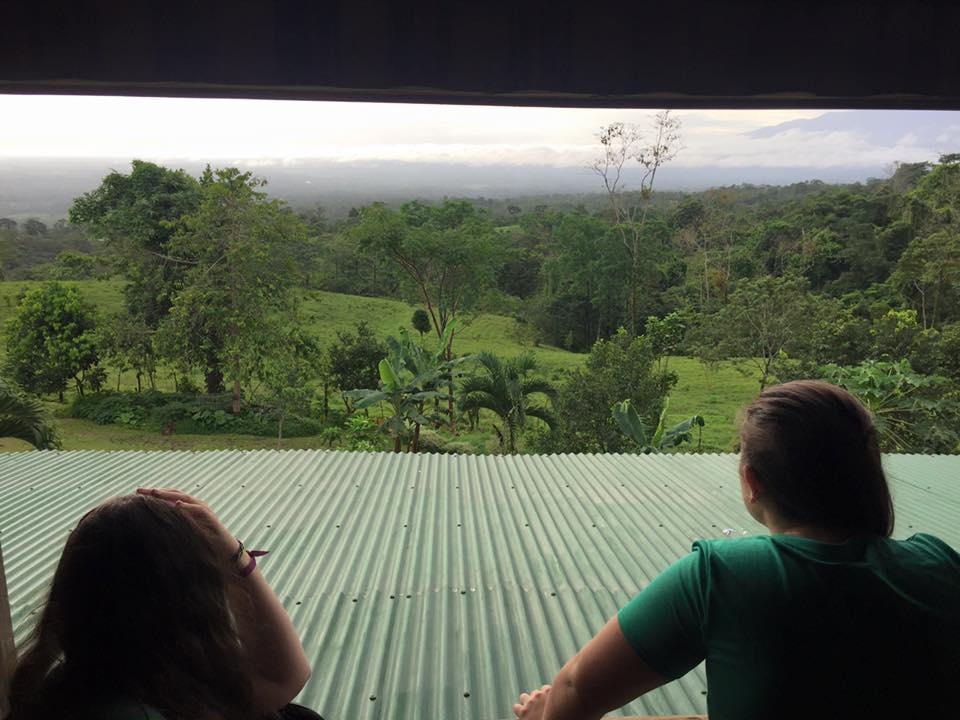
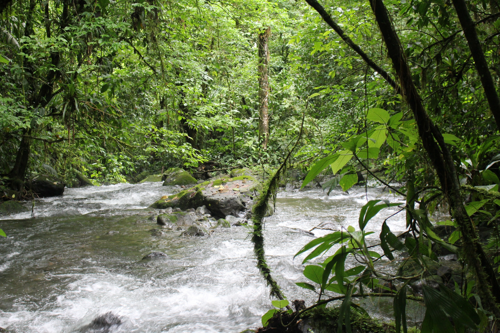
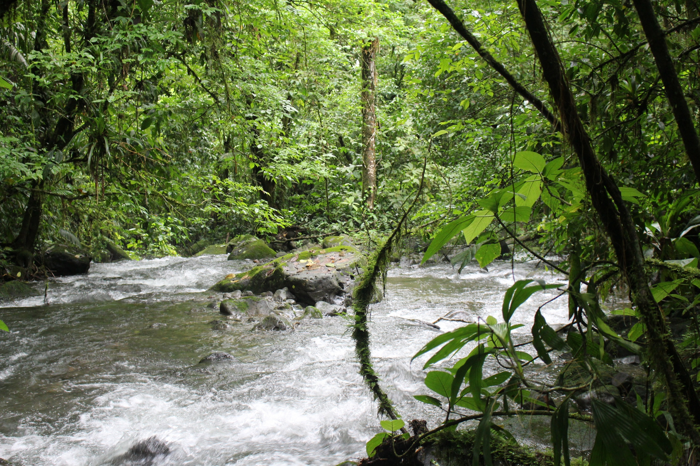
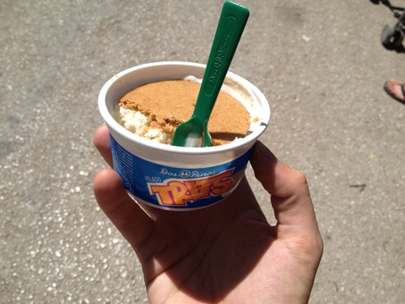
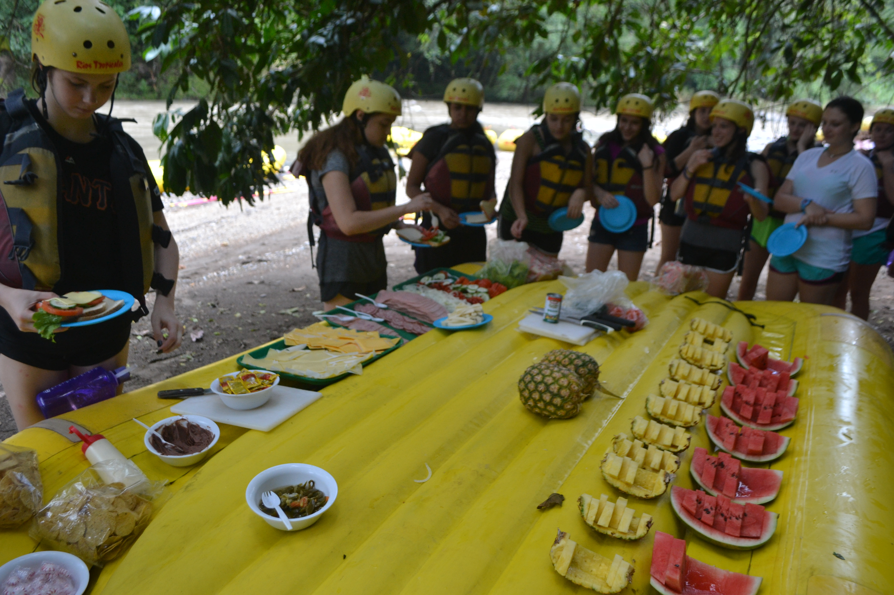
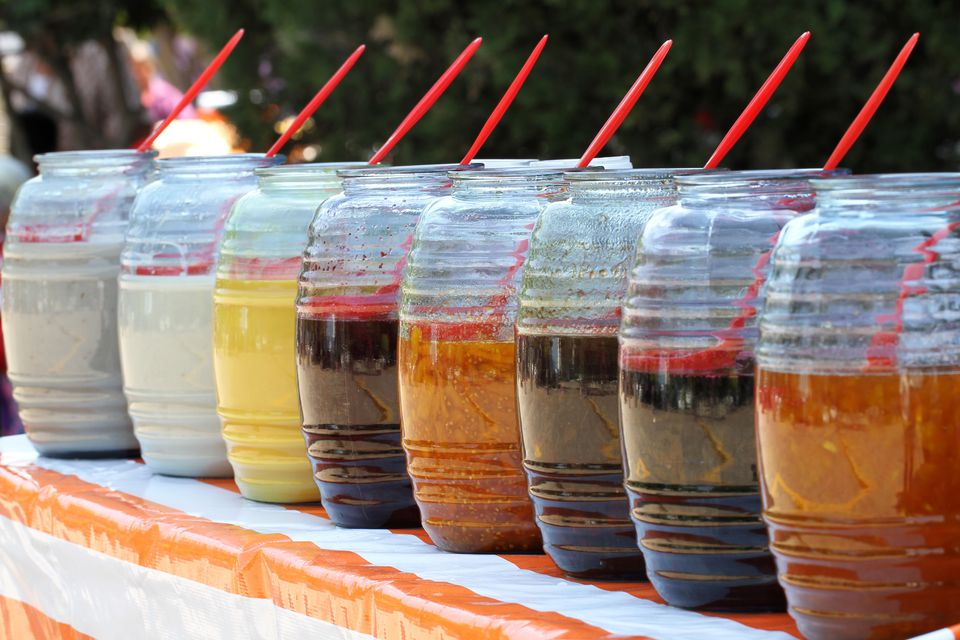
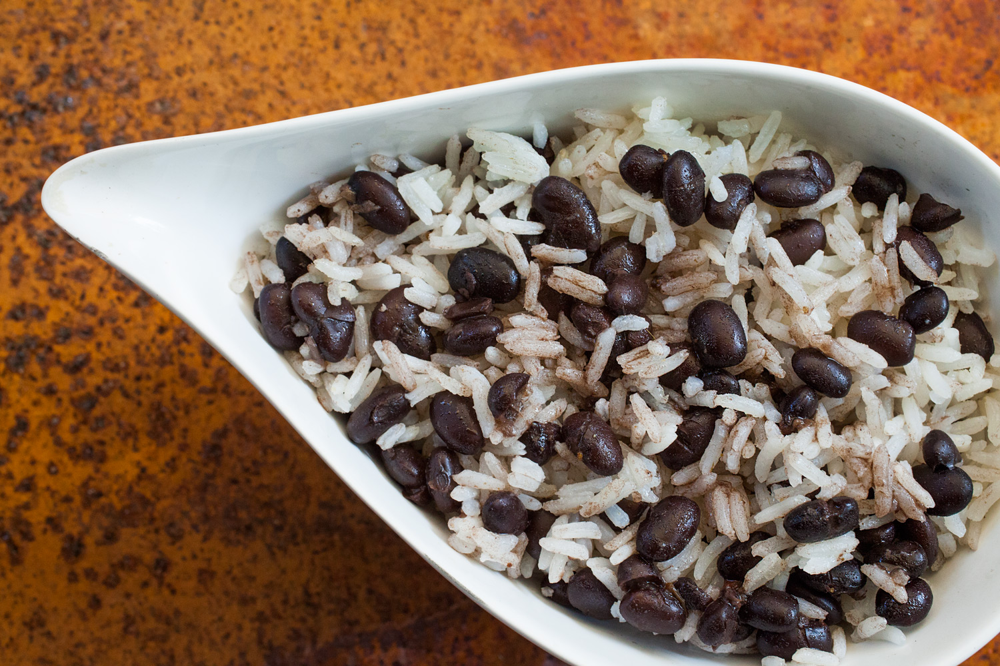
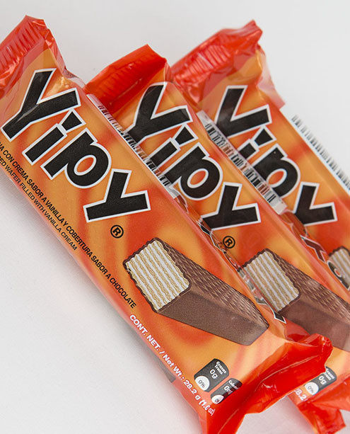
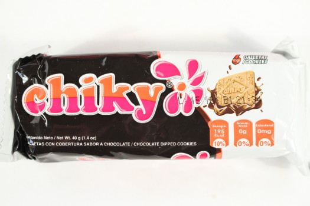

Costa Rica


Places I Visited
Pacuare River
Sarapiqui
Arenal
La Fortuna
Isla Tortuga
 


Food I Ate
Trits
Fruits
Juegos Frutas
Rice and Beans
Yipy Cookies
Ckiky Cookies
     My Favorite Memories
White Water Rafting on the Pacuare River
After arriving in Costa Rica, one of the first things we did as a group was go on a white water rafting trip on the Pacuare River. I had never done anything like this before, and I was honestly nervous about it, especially since none of us really knew eachother yet. There wasn't too much time to think about it though because we quickly learned how to steer and manuever the raft and then we were out on the river. My nerves were quickly replaced with adrenaline, the journey down the river exhilarating me. After a few hours on the river we docked our rafts at an ecolodge and it was one of the nicest places I had ever seen. Overall, those first two days of the trip got me even more excited for the trip ahead of me.
Summer Camp Leadership
The name of the trip that I was on was "Summer Camp Leadership in Costa Rica," and as the name entails the main purpose for our time in Costa Rica was to plan and hold a week of camp for around 20 local Costa Rican children. Camp is not a very common occurence in Costa Rica, so the experience we provided these children could not be replicated anywhere else. Growing up I had always attended different camps, and those expereine are some of my most fond memories. As a group, we were all very excited to plan the camp, but we were left disappointed after the first day becasue everything we planned did not go according to plan. After a tough first day, we became even more committed to redesigning the structure of camp as to make it a success. At this point we all came together and were able to put on a fun camp experience that the campers truly enjoyed.
High in the Sky
After camp one day we had the option to go on one of two activities outside of camp, and one of those options was zipling. Never having gone zipling, I decided to take a chance and go. Like when white water rafting, I was nervous at first since it was an experience like I had never had before. After getting strapped into our harnesses and given a brief explanation on how to do it, we were all brought up to the first zip line. When it was my turn, and I was standing on the edge of the platform my heart was pounding. All I could see in any direction were trees, and the ground was no where in sight. Despite the nerves I first had, when I finally stepped off the zip line and began flying towards the next platform, I couldn't help but smile and laugh. Again, the adrenaline pulsing through my body made me feel like I was invincible. To make the experience even better, one of the longest lines of the whole course went across open sky, well above other trees. When I was up on that line, I couldn't help but stare in awe at the beauty of the Arenal Volcano that I saw.
Messy Situation
During our time at camp, it became clar very quickly that soccer, or futbol, was one of the activities that all the campers wanted to do all day everyday. We would be playing other games, or trying to teach them English, and all of them would try and convince us to play soccer instead. Throughout the week we were able to steer their attention in other directions, but during one of the last days of camp, all of us come together and finally played futbol. At this time is was early July, making it rainy season in Costa Rica. This left the field we were playing on extremely muddy in some places. As the game went on, more and more people were slipping in the mud, and eventually the game of futbol digressed into everyone playing in the mud. People were slidng through the mud, layin in it, rubbing it on themselves, and eventually it turned into a full on mud fight. In any other scenario, I probably would've thought that the idea of playing in the mud was gross, but on this day it was the most fun I could've had. Everyone was laughing and smiling, even the people that were hesitant to the mud at first.
A New Friend
On the final day of camp, we took all of the campers to a local waterpark. This was another fun day of playing in the water and running around, but my favorite part of the day as not the actual experience of being at the waterpark. Throughout the week of camp each of us "councelors" began developing stronger relationships with certain campers and vice versa. One of the campers that I spent a lot time with throughout the week was Fernando. When we would do the english lessons, I would sit with him and help. He was one of the older campers, and knew more English than the rest of them, allowing us to talk more and have actual conversations, both in English and Spanish. On the day of the water park we each paired off with a camper, and Fernando was my partner for the day. As the day was coming to a close and we were all saying our final goodbyes to all the campers, Fernando came up to me and asked if we could take a picture together. That moment warmed my heart since it showed me that I had truly made an impact on his life, may it be small, and that all the hard work was worth it in the end.
That's soooo Rustic
Once all of our responsibilites with camp were over, and we had put in over 60 hours of community service, we were able to spend the last few days of the trip relaxing. When camp ended we left the jungle of Arenal and headed for the beach. One day we all hoped on to a catamaran which took us Isla Tortuga, a private island. I could've stayed on the boat all day, driving throughout the ocean, basking in the sun. But, the day got even better once we got onto the island. We first went snorkeling, where we got to just swim around and see what we could find. Later, we went banana boating, where a tube in the shape of a banana is attached to a boat and we ride around through the waves. Instead of just going for the ride, the girls on my tube made a game out of seeing how many times they could fly off the tube all while making it look like an accident. For the rest of the day we all just hung out on the beach, spending time with one another. Overall, one of the parts I enjoyed most about hte trip were the people that I met. By the end, it felt like I had known some of those girls for years instead of days. It was small moments like these, or running around our hotel looking for aloe plants to cure our crisp sunburns that I will always remember and cherish.